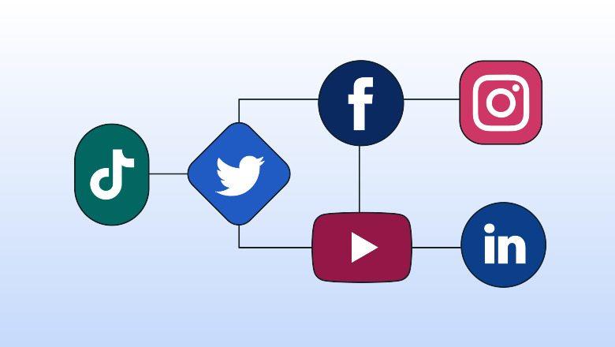

<html>
<head>
<title>Hello</title>
<head>
<boby>
</html>
A fruit is the part of a flowering plant that contains the seeds. The skin of a fruit may be thin, tough, or hard. Its insides are often sweet and juicy. But some fruits, including nuts, are dry. Fruits develop from a plant’s flowers.🥀
Fruits Counteract Cardiovascular Disease. For example, lemons 🍋, limes, grapefruits 🍇 are especially good for this. According to Mayoclinic, fruits have less calories and more fiber content, which is beneficial for cardiovascular health.